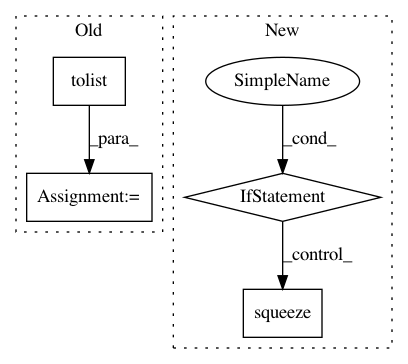

1ddc26b3cfc16daae7cfdde9a730be33b8b690c0,pliers/extractors/text.py,PretrainedBertExtractor,_extract,#PretrainedBertExtractor#Any#,484
Before Change
preds = [p.detach().numpy() if self.framework == "pt" else
p.numpy() for p in preds]
out, t_tok, t_wds, t_ons, t_dur = self._postprocess(preds, t_tok, t_wds, t_ons, t_dur)
data = [out.tolist(), t_tok, t_wds]
features = self._get_feature_names()
return ExtractorResult(data, stims, self, features=features,
onsets=t_ons, durations=t_dur)
After Change
wds, ons, dur, tok, idx = self._preprocess(stims)
preds = self.model(idx)
preds = [p.detach() if self.framework == "pt" else p for p in preds]
preds = [p.numpy().squeeze() for p in preds]
data, ons, dur = self._postprocess(preds, tok, wds, ons, dur)
features = self._get_feature_names()
return ExtractorResult(data, stims, self,
In pattern: SUPERPATTERN
Frequency: 3
Non-data size: 4
Instances
Project Name: tyarkoni/pliers
Commit Name: 1ddc26b3cfc16daae7cfdde9a730be33b8b690c0
Time: 2020-03-02
Author: rbrrcc@gmail.com
File Name: pliers/extractors/text.py
Class Name: PretrainedBertExtractor
Method Name: _extract
Project Name: rusty1s/pytorch_geometric
Commit Name: 675b7884c09875486fdddffa2d8a6a12247ab4d7
Time: 2020-05-31
Author: matthias.fey@tu-dortmund.de
File Name: torch_geometric/utils/convert.py
Class Name:
Method Name: to_networkx
Project Name: rusty1s/pytorch_geometric
Commit Name: a998e7a1fa996edb4bcc1b34a0df5967ed6ec9e2
Time: 2020-05-13
Author: matthias.fey@tu-dortmund.de
File Name: torch_geometric/utils/convert.py
Class Name:
Method Name: to_networkx